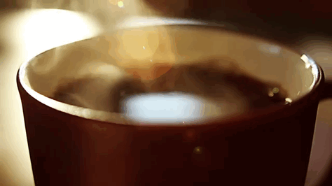

Nossa equipe é apaixonada pela arte do café e busca proporcionar uma experiência excepcional aos clientes. Criamos obras de arte memoráveis em cada xícara. Valorizamos a qualidade dos ingredientes e buscamos grãos de café selecionados, torrados com maestria. Estamos atualizados com as tendências e métodos de preparo, oferecendo uma variedade de bebidas que atendem às preferências dos clientes.
Acreditamos no trabalho em equipe e em um ambiente acolhedor. Oferecemos um serviço atencioso e personalizado, para que cada cliente se sinta bem-vindo e desfrute de momentos relaxantes em nossa atmosfera aconchegante. Seja para um café matinal revigorante, uma pausa durante o dia ou uma reunião descontraída com amigos, nossa equipe está pronta para tornar cada visita à cafeteria memorável, com sabores excepcionais e atendimento de alta qualidade.
